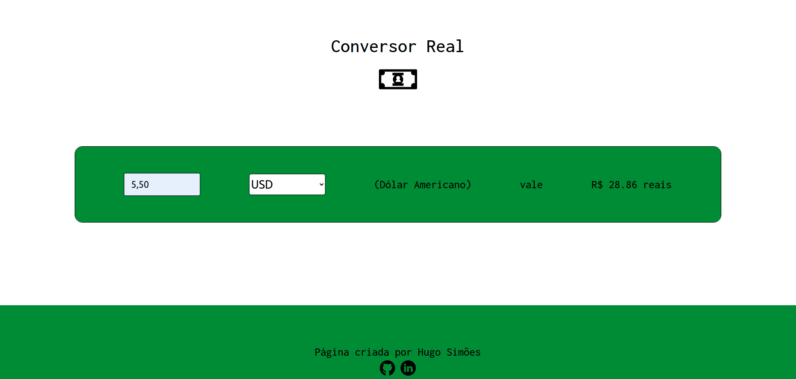
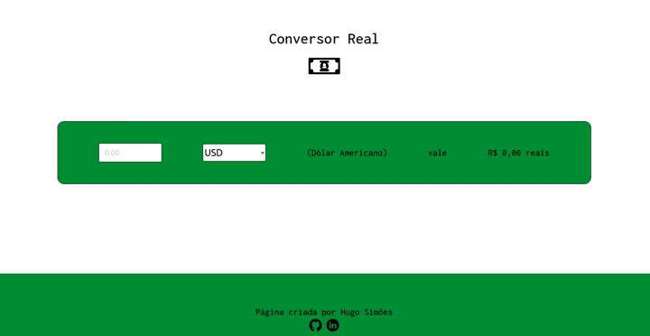

Conversor Real
Descrição do Projeto
O projeto Conversor Real é uma aplicação web que faz a conversão atual de várias moedas para a moeda Real com apenas alguns clicks
O conversor real é um projeto particular com intuito de colocar em prática os estudos na área de desenvolvimento de software utilizando a linguágem de marcação de hipertexto comumente chamada de HTML, a linguágem de estilo chamada CSS e a linguágem de programação JavaScript.
Para melhorar a estilização também foi utilizado o framework Bulma e para buscar informações dos dados das moedas foi utilizado a API AwesomeAPI
← Voltar ao portifolio